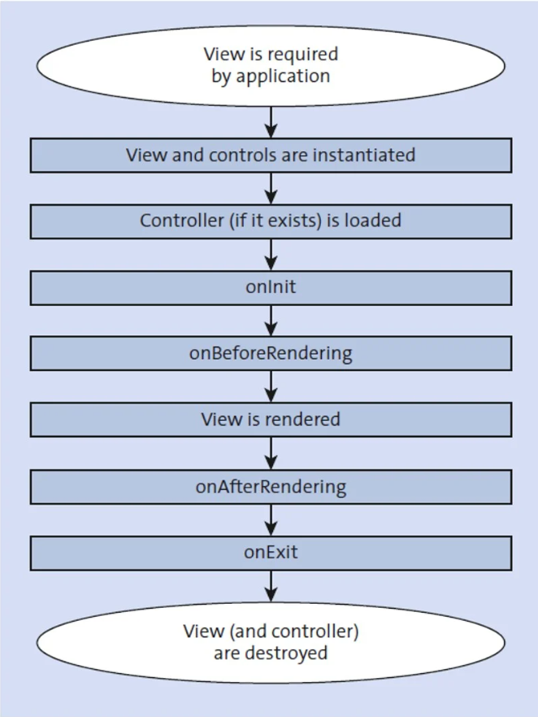

⮟ Introduction to UI5
⮟ Project Folder Breakdown
1. Introduction 2. Breakdown 2.1 Controllers 2.2 Views 2.3 Fragments 2.4 CSS 2.5 i18n 2.6 Formatter 2.7 index.html 2.8 manifest.jsno 2.9 component.js 2.10 models.js 2.11 Theme
Introduction to UI5
Introduction to UI5
SAPUI5 is a user interface development toolkit. First developed by SAP in 2010 under the code name Phoenix, the framework allows developers to create web applications for HTML5. SAPUI5 allows users to consume data from any service. It uses the model-view-controller (MVC) development concept, which consists of a three-part application: models, which contain data; views, which represent the data and the UI; and controllers, which handle the data and user interaction.
Basic Breakdown
Models
Models are containers for data and hold all the business data an application will work with. There are a handful of pre-defined model classes available in SAPUI5, including JSON and resource models.
Views
Views are the front-end display of data by an application. Because this is the portion of the app that end-users work with, it’s important to incorporate design thinking and UI best practices when developing views.
Controllers
Controllers implements the logic that bridges Models and Views.
Controls
Controls are the decision-makers in a line of code. Sometimes called widgets, components, or elements, they tell the app what to do whenever a choice has to be made. Currently, more than 200 controls exist with more in development.
Libraries
Controls are accessible to developers via numerous libraries. Here’s a brief overview of key libraries and what they allow:
- ui.core: core functionality; essential to all SAPUI5 apps
- m: main library; includes most basic and important controls for mobile and desktop devices
- ui.layout: structure controls for element display
- ui.unified: mobile and desktop controls
- ui.table: data controls for large-volume data
- viz: different types of charts
- ui.comp: smart content such as SmartField, SmartTable, etc.
- suite: a set of three libraries that contain types and templates
- ushell: shell, service-related functionality
- uxap: controls such as breadcrumbs
- ui.suite: controls for new SAP Business Suite (SAP ERP) apps
- ui.vk: functionality and controls for 3D modeling

UI5 Evolution
SAPUI5 is constantly being retooled and updated by a worldwide team of developers working as part of the UI5 Evolution project. Under the team’s guidance, the current framework of SAPUI5 has evolved to orbit around four key areas: a modular core, rendering and controls, programming models, and build tooling.
Modular Core
The modular core of SAPUI5 reduces code down to a compact foundation. This not only streamlines and allows for more-organized code, but the code reduction makes apps more lightweight and therefore quicker for the user.
Rendering and Controls
By making rendering and controls as small as possible while maintaining UI functionality, developers can reduce application complexity and make the framework faster.
Programming Models
As SAPUI5’s programming model has been updated, it can be used alongside other frameworks such as Angular or React.
Build Tooling
The latest advancement of build tooling for SAPUI5 is compatible with Node.js, allowing developers to use SAPUI5 alongside the platform. Available build tooling packages include ui5-logger, ui5-fs, ui5-builder, ui5-project, ui5-server, and ui5-cli.
UI5 Controls Intro
We’ve learnt in the introductory slide pack to this course that UI5 Fiori applications use a MVC architecture, Mode-View-Controller. For the View, we tend to code in XML which stands for Extensible Markup Language. SAP’s UI5 Java Script framework introduces
specialised XML tags that render Fiori objects on the screen. For our first example, let’s look at the Input control, which is an input box that receives strings values. Common use cases include entering your name or giving data.
<Input/>This is as barebones as you can get. It doesn’t hold any properties, aggregations, associations, or events. And it self-closes as well. Let’s go over everything mentioned:
Property
These values control aspects of the control and change the behaviour of the call. For example, if we put a string value in the ‘placeholder’ property on the Input control, we can display a faded text in the input box as a description to help the user with what to enter into that Input control. We would write it like:
Input placeholder= "Enter name here..." />
Aggregation
These are child tags. Most controls have possible aggregations that can be used, a few are common like ‘content’ or ‘customData’. In this example, the aggregation is called suggestionItems, and it expects a list of suggestion item controls.
<Input>
<suggestionItems>
<Item text="Suggestion 1"/>
<Item text="Suggestion 2"/>
<suggestionItems/>
<Input/>
Association
These values are often used to link ‘Label’ controls and other controls to aid accessibility programs in reading the page.
Label id="idLabelCotrol" text="Label for the input"/>
Input ariaLabelledBy="idLabelCotrol" />
Event
These are your bread and butter in giving your application functionality, we will be looking at these in depth during this course. These values act as hooks for your XML to trigger coded functions in a linked controller, written in JavaScript. In this example, we will be using the ‘submit’ event, which will look like this:
<Input submit="onSubmit"/>
Self-Closing
This is standard XML notation. If a tag has no children or anything between an open and closing tags, then the open tag can self-close as above.
Example:
<Input><Input/>becomes
<Input/>
Hungarian Notation
Hungarian notation in programming is a naming convention used to denote the data type of a variable while defining it. In the Hungarian method, each variable name starts with or ends with some characters that indicate its data type. It is used to improve code readability and maintainability. By using a consistent naming convention,
it becomes easier for developers to understand the purpose and usage of variables, functions, and other program elements.
Examples:
- a → array
- b → boolean
- i → integer
- s → string
- p → promise
- o → object
Other Key SAPUI5 Terms
While we’ve laid out many of the important terminology you’ll run into when working with SAPUI5, there are a handful more that will be helpful to you.
Operations:
Create, Read, Update, and Delete operations.Event handlers:
Functions that are assigned to controls and execute commands when the controls are invoked.JavaScript Object Notation (JSON):
A data format written in text that allows for easy access and analysis by humans and machines.Open Data (OData):
An open HTTP-based protocol for consuming, querying, and exposing data on the web that provides common access to data without learning new APIs.Representational State Transfer (REST) Programming:
A programming paradigm typically applied to web services.SAP Web IDE:
A cloud-based development environment for SAPUI5 applications.UI5 Inspector:
A Google Chrome plugin that provides debugging assistance.Camel Case:
A way to separate the words in a phrase by making the first letter of each word capitalized and not using spaces, e.g. camelCasePromise:
An object that will produce a single value some time in the future. If the promise is successful, it will produce a resolved value, but if something goes wrong then it will produce a reason why the promise failed
SDK
The reference for UI5 controls can be found at this link: https://ui5.sap.com/
This is the backbone to creating UI5 applications. It holds tutorials, sample applications and information on every UI5 control. For now, all you will need to know is that all controls are under the ‘API Reference’ tab. As it is all UI5 controls, be aware that some controls have the same name but belong to different libraries.
For example, the sap.m.Table and the sap.ui.table.Table are both called Table but behave in different ways and have different associated properties.